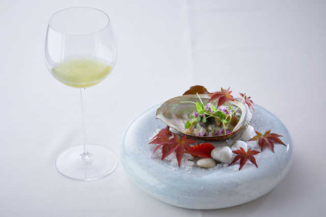
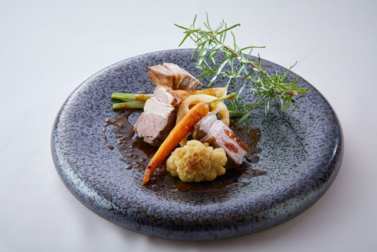
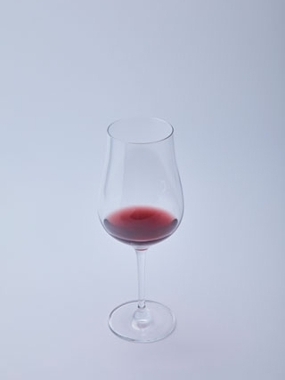

Префектура Сидзуока · Ито · рёкан и чай
ABBA RESORTS IZU Zagyoso: французский ужин, к которому вместо вина подают чай из Сидзуоки

Японский чай привыкли считать напитком из прошлого: матча на чайной церемонии, зелёный чай из глиняного чайничка. В ресторане старого рёкана на полуострове Идзу его наливают в бокалы и ставят в один ряд с вином и сакэ.
Идея
Чай вместо вина
Чай в японской гостинице есть всегда, но обычно о нём не задумываются: его подают бесплатно, как воду. К 2018 году всё больше мест в Японии смотрели на чай иначе, и важным становился не только сорт, но и то, как его подают.
Одно из таких мест находится в Ито, курортном городе на восточном берегу полуострова Идзу. Здесь работает ABBA RESORTS IZU Zagyoso, дорогой рёкан с долгой историей, а при нём французский ресторан «Ямамомо». Его повара взялись за «ти-пэйринг»: к каждому блюду подбирают свой чай, так же как к еде подбирают вино или сакэ, и чай становится полноправной частью меню.
Основа кухни это сезонные местные продукты, прежде всего свежие морепродукты, выловленные у берегов Идзу. К ним подают чай из Сидзуоки, главную гордость префектуры. Напитки придумывают так, чтобы они радовали и глаз. Например, игристый ходзича, обжаренный зелёный чай, смешивают с лемонграссом с Идзу и виноградным уксусом.
Меню составлено при участии ресторана MAVO в квартале Гион в Киото, который известен блюдами с чаем из Удзи. За работу, которая поднимает ценность японского чая, рёкан получил премию World Boutique Hotel Awards.
Меню
Море, горы и люди
Блюда меняются каждый сезон. Каждый курс собран из того, что можно найти только в Сидзуоке и на Идзу: из местных продуктов и местных традиций. Так за одним ужином встречаются море, горы и люди этого края.


В сентябре и октябре к абалону наливают гёкуро, зелёный чай, выращенный в тени, из района Асахина в префектуре Сидзуока. В ноябре и декабре на столе появляется кабан с гор Амаги, и к нему подают купаж: ходзича без пестицидов из Фудзиэды, свёкла и бобы тонка.
В 2018 году такой ужин подавали в рамках специального плана проживания с завтраком и ужином. Ночь с ти-пэйрингом стоила тогда от 49 896 иен с человека при размещении вдвоём.
ABBA RESORTS IZU Zagyoso, ресторан «Ямамомо»
- Адрес
- префектура Сидзуока, Ито, Яватано, 1741
- Телефон
- +81 557-53-1170
- Цены / Вход
- план «Чай и французская кухня», 1 ночь с завтраком и ужином, от 49 896 иен с человека (номер на двоих)
- Сайт
- zagyosoh.com
Фото: Киёно Хаттори, Кадзуя Хаяси, Юдзи Имаи.